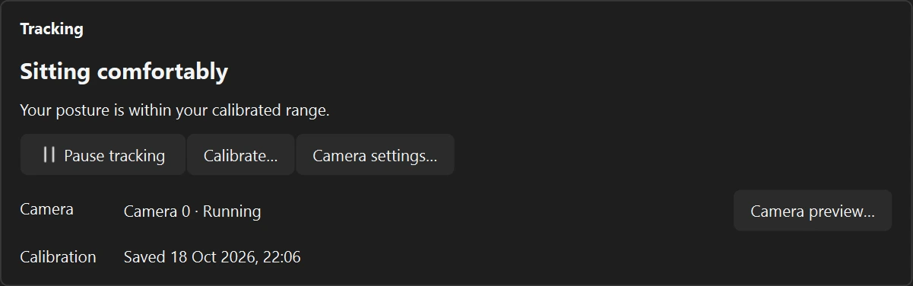

a little nudge. a lot less hunch.
don't get shrimped.
Posture checks that learn your normal. A shrimp when you slouch. A reminder when it’s time to move. Your desk habits, gently nudged.
Uses your webcam · No account · No cloud


01 / the OSA posture system
catch the drift.
before the hunch.
Deep in your work, it’s easy to forget how you’re sitting. Unshrimp keeps an eye on your posture so you don’t have to.
- More than a head tilt. OSA combines head angle, head-to-shoulder position, and forward-lean signals, compared with your own baseline.
- Built for ordinary movement. Smoothing softens momentary spikes, while head-turn filtering avoids scoring readings it can’t trust.
- A nudge you can notice. The shrimp meter shows the drift. Keep slouching and the floating shrimp appears, with optional notifications and sound.

02 / personal OSA calibration
your posture.
your starting point.
A generic “sit straight” rule only goes so far. OSA learns the difference between your comfortable posture and your hunch.
Get your setup right
Guided checks help with camera position, framing, and lighting before collecting your baseline.
Sit tall. Sit normally. Hunch.
Follow the pose instructions and shrimp countdown. Usable readings drive progress; losing tracking pauses collection.
Verify, then start tracking
A final check tests the baseline against your normal sitting. Recalibrate whenever you move your camera or change your setup.
About a minute to set up. A baseline built around you.

03 / time to come up for air
less sitting.
more moving.
A better desk habit includes leaving the desk. Get a gentle reminder after the sitting time you choose.
- Counts sitting, not just the clock. Time away, pauses, calibration, sleep, and camera outages don’t advance your reminder.
- A break that fits your day. Set the interval, choose a 1–30 minute break, and add your own stretch suggestions.
- You’re in control. Start the countdown, snooze for 5 or 10 minutes, or skip until the next full interval.
During a break, posture alerts and the sitting timer pause. Camera tracking continues.


the little things, taken care of
fits into your workday.

- See your patterns. Monitored time, a weekly posture breakdown, and a 12-week activity calendar, stored locally.
- Pause when you need to. Quick controls on the meter and in the tray. Preview your camera separately while posture tracking is paused.
- Quietly in the background. Close the dashboard and tracking stays in the tray. Optional start-at-login keeps it out of your way.
- Make the nudge your own. Adjust sensitivity, notifications, meter size, shrimp visibility and placement. Reduced motion and multiple displays are supported.
your camera stays yours
- No cloud, no accounts, no telemetry. There is nothing to sign into and nowhere for your data to go.
- All pose estimation runs on-device via MediaPipe. Your webcam frames are processed locally.
- No frames, images or video are ever written to disk — only anonymous landmark coordinates in memory.
- Your posture history is a small local file. It never leaves your machine.
your next good desk habit
less hunch.
more you.
Grab unshrimp-win64.zip from Releases, unzip, double-click
unshrimp.exe — no installs; the posture models ship inside.
A webcam is required. The Windows download is unsigned, so Windows may show a SmartScreen warning.
macOS isn't packaged yet; see GitHub for running from source.